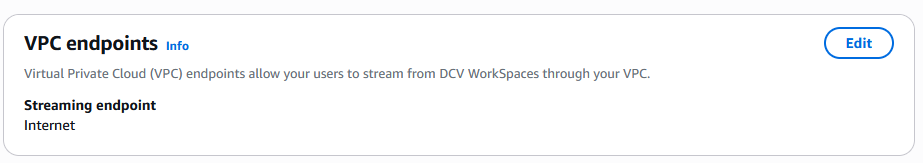
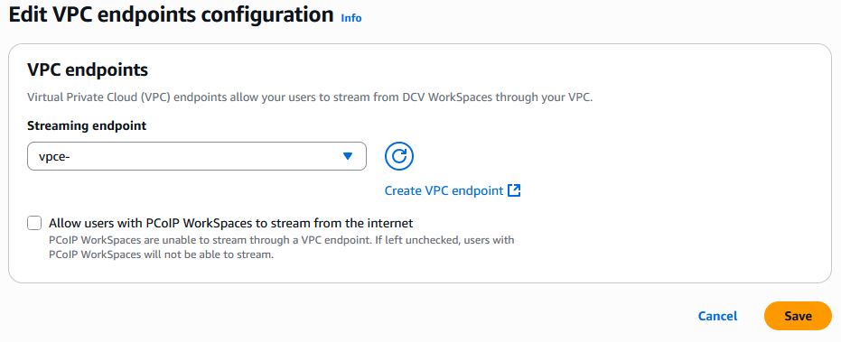

Desktop and Application Streaming
Connecting Amazon WorkSpaces Personal with AWS PrivateLink
Written by Dave Jaskie, Gekai Zou, Aamir Khan, and Anshu Prabhat | June 26, 2025 | in Amazon WorkSpaces, AWS PrivateLink, End User Computing | Permalink | Share
Customers often ask how to leverage AWS PrivateLink to connect with Amazon WorkSpaces Personal. PrivateLink provides a seamless way to establish private, secure connectivity without using traditional network components like internet gateways, NAT devices, or VPN configuration. This approach not only simplifies network architecture but also enhances security by significantly reducing the attack surface and keeping all data traffic safely within the AWS network. In this article, we’ll walk you through the steps to integrate PrivateLink with WorkSpaces, helping you unlock these benefits in your environment.
Prerequisites and Limitations
PrivateLink for WorkSpaces is currently supported for streaming traffic. See the Admin Guide for details on prerequisites and limitations with WorkSpaces. To configure PrivateLink, you first need to set up a security group, create a VPC endpoint, and finally configure the WorkSpaces directory to use the VPC endpoint.
Step 1: Create a Security Group
In this step, you create a security group that allows WorkSpaces clients to communicate with the VPC endpoint you’ll create.
- In the navigation pane of the Amazon EC2 console, go to Network & Security, then select Security Groups.
- Select Create security group.
- In Basic details, enter:
For Security group name – Enter a unique name to identify the security group.
For Description – Enter a description of the security group’s purpose.
For VPC – Select the VPC where your VPC endpoint will reside. - In Inbound rules, select Add rule to create an inbound rule for TCP.
- Enter the following details:
For Type – Select “Custom TCP”.
For Port range – Enter ports: 443, 4195.
For Source type – Select “Custom”.
For Source – Enter the private IP CIDR range or other Security Group IDs that your users connect to the VPC endpoint from. Ensure only traffic from IPv4 addresses is allowed. Make sure to allow inbound traffic from IPv4 addresses. - Repeat steps 4 and 5 for each CIDR range or security group.
- In Inbound rules, select Add rule to create an inbound rule for UDP.
- Enter:
For Type – Select “Custom TCP”.
For Port range – Enter ports: 443, 4195.
For Source type – Select “Custom”.
For Source – Enter the same private IP CIDR range or Security Group IDs entered in Step 5. - Repeat steps 7 and 8 for each custom UDP source.
- Select Create security group.
Step 2: Create a VPC Endpoint
In Amazon VPC, a VPC endpoint allows you to connect your VPC to supported AWS services. In this example, you configure the VPC so WorkSpaces users can stream from WorkSpaces.
- Open the Amazon VPC console.
- In the navigation pane, go to Endpoints, then select Create Endpoint.
- Select Create Endpoint.
- Ensure the following settings:
Service category – Select “AWS services”.
Service Name – Select com.amazonaws.Region.prod.highlander.
VPC – Select the VPC where you want to create the interface endpoint. You can select a VPC different from the one hosting WorkSpaces resources as long as the network can route traffic to the VPC endpoint.
Enable Private DNS Name – Deselect if users use a network proxy to access streaming sessions; disable proxy caching on the domain and DNS names related to the private endpoint.
DNS record IP type – Select IPv4, as IPv6 and Dualstack are not currently supported.
Subnets – Select the subnets (Availability Zones) to create the VPC endpoint. It’s recommended to select at least two subnets.
IP address type – Select IPv4.
Security groups panel – Select the security group you created in step 1.
(Optional) In the Tags tab, you can add tags if desired. - Select Create endpoint.
- When the endpoint is ready, the Status column will show Available.
Step 3: Configure the WorkSpaces Directory to Use the VPC Endpoint
You need to configure the WorkSpaces directory to use the VPC endpoint you created for streaming.
- Open the WorkSpaces console in the same AWS region as the VPC endpoint.
- In the Navigation pane, select Directories.
- Select the directory you want to use.
- In the VPC Endpoints section, select Edit.

- In the Edit VPC Endpoint dialog box, under Streaming Endpoint, select the VPC endpoint you created.

- Optional: You can enable Allow users with PCoIP WorkSpaces to stream from the internet. If enabled, PCoIP WorkSpaces users can stream over the public Internet. If not enabled, PCoIP WorkSpaces in the directory will not work without internet because PCoIP WorkSpaces do not support streaming via VPC endpoint.
- Select Save.
Note: Traffic for new streaming sessions will be routed through this VPC endpoint. However, running sessions will continue to use the previously configured endpoint.
Conclusion
In this article, we discussed how to set up Amazon WorkSpaces Personal with AWS PrivateLink. For more information about PrivateLink, see the AWS product page. If you have questions, you can contact the AWS support team. To stay updated on new End User Compute features, check “What’s New with AWS” and the corresponding YouTube playlist.
Authors

|
Dave Jaskie is a Senior End User Computing Solutions Architect at AWS, with 15 years of experience in end user computing. Outside of work, Dave enjoys traveling and hiking with his wife and four children. |

|
Aamir Khan is a Senior Principal Technical Program Manager in the End User Computing Product team, with 12 years of industry experience. With a customer-first approach, his work sets a standard. Outside of his professional role, Aamir enjoys family moments and occasionally off-roading in his LC-100, exploring the wonders of the Pacific Northwest. |

|
Anshu Prabhat is a Software Development Engineer III at AWS in the Safe Work Support Organization with over 12 years of experience in secure cloud computing and scalable services at Amazon. Anshu enjoys exploring the world of GenAI and strives to automate routine personal tasks using Agents. |

|
Gekai Zou is a Senior Principal Product Engineer for AWS End User Computing. Gekai has been with AWS since 2019. Outside of work, Gekai enjoys camping and skiing with his family. |